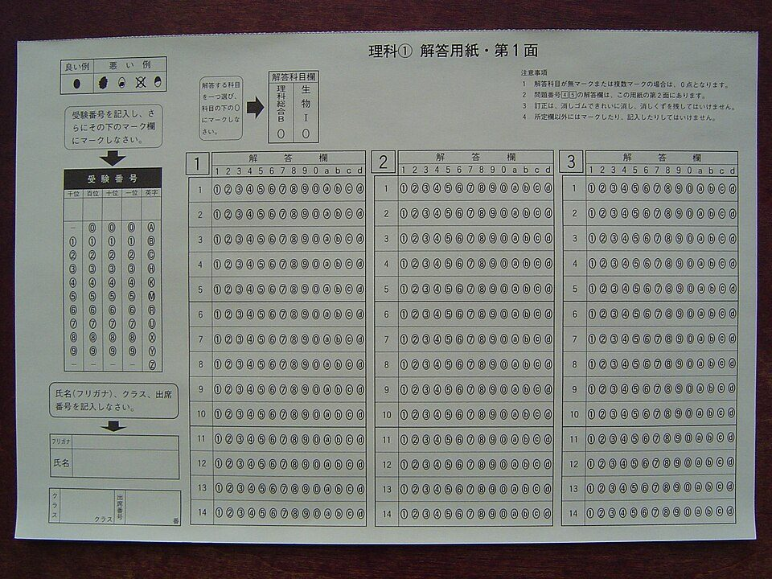
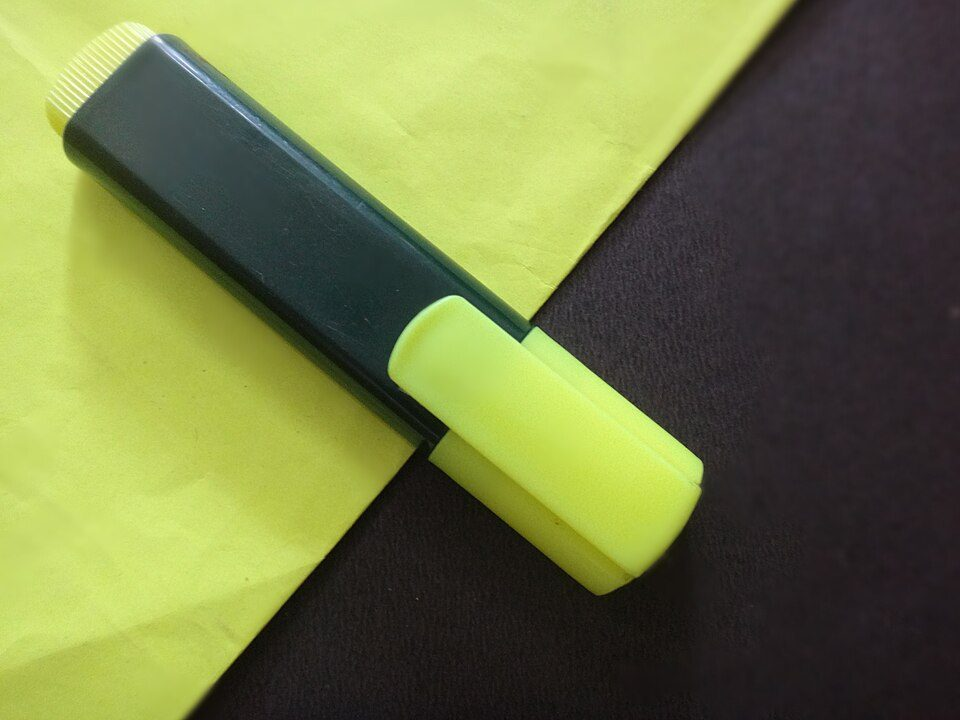
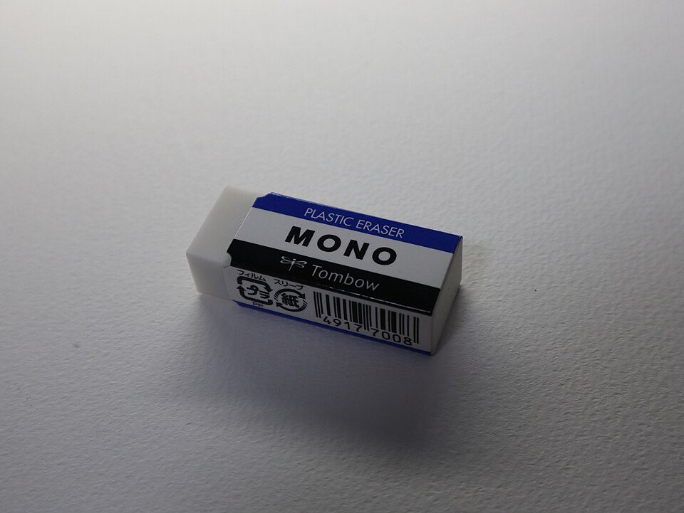
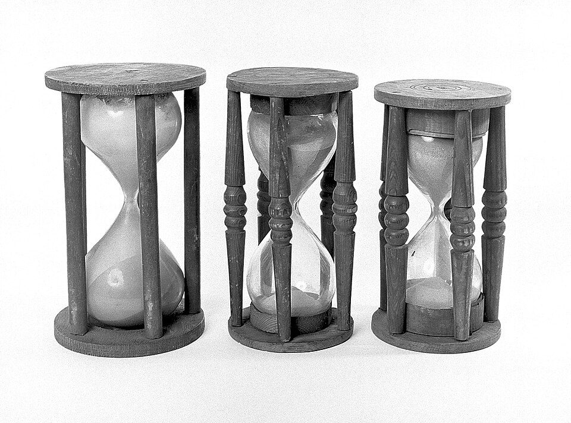

AIを使った資格試験の勉強法：過去問の解き直し・確かめ問題・暗記カードの作り方と、AIの間違いの確かめ方（2026年版）
要点まとめ
生成AIに過去問の解説を頼むと、分かりやすい答えがすぐに返ってきます。ただ、答えをそのまま見せるAIで練習した高校生は、AIを外した試験で点が下がった、という研究があります[1]。この記事では、AIを「答えを出す係」ではなく「ヒントを出す係」「問題を出す係」として使う勉強の流れを、研究と、試験団体・文化庁などの公式の資料をもとにまとめました。特定のAIサービスをすすめる記事ではなく、どのAIでも同じようにできる手順にしています。

研究で分かっていること
ここで紹介するAIの研究は、高校の数学と大学の物理での実験で、資格試験そのものを調べたものではありません。「AIをどう使うと学びにつながるか」の手がかりとして読んでください。
答えを見せるAIは、AIなしの試験で点が下がった
AIを外した試験で、使わなかった生徒より17%低い
トルコの大きな高校1校で、9〜11年生の約1,000人を対象に行われた実験です（2023〜2024年度の秋学期、数学）。クラスごとに「AIなし」「ChatGPT に似た普通の画面のAI」「答えを直接言わずにヒントを出す家庭教師型のAI」に分け、90分の演習を4回行いました[1]。
| 練習で使ったAI | 演習中の点 | AIを外した試験 |
|---|---|---|
| 普通の画面のAI | 48%高い[1] | 17%低い[1] |
| 家庭教師型のAI | 127%高い[1] | 統計的に差がない[1] |
家庭教師型のAIには、正しい答えと、教師が用意した問題ごとの情報を、指示文に組み込んでいました[1]。普通のAIの生徒は、答えを聞いて写す「松葉杖」のような使い方をしていて、それが点が下がった主な理由だと著者はみています[1]。
正解を組み込んだAIの家庭教師では、授業より伸びた
1段ずつ進めるAIで、伸びが授業の2倍を超えた
ハーバード大学の物理の入門の授業で、194人を対象にした実験です（2023年秋学期）。授業の9週目と10週目に、学生を2つに分け、AIでの自習と、教室での能動的な授業を、入れ替えて1回ずつ受けました。テーマは表面張力と流体の流れです[4]。事前テストからの伸び（中央値）は、AIで自習した回の方が、授業の回の2倍を超えました[4]。
差を分けたのは、AIの「作り」
答えをすぐ出さず、正解を持たせたAIでよい結果
2つの研究は逆の結果に見えますが、よい結果だったのは、どちらも答えをすぐに出さず、正しい解答を組み込んだAIでした[1][4]。手元のAIでこの形に近づけるなら、「答えは先に言わないで」と頼み、公式の解答を一緒に渡す使い方になります（筆者の見解）。文部科学省の学校向けの指針も、AIに依存したり答えをうのみにしたりすると、「目的に即した必要な学習過程が省略されてしまい」、力が育たないリスクがあるとしています[5]。
記憶に残るのは、思い出す練習と、間隔を空けた復習
1週間後、思い出した群56%、読み直した群42%
「思い出す」は、読んだあとに内容を思い出して書いた群（採点や正解の提示はなし）
直後のテストでは読み直した方がよく覚えていましたが、2日後と1週間後は逆になりました[6]。10の勉強法を評価した研究でも、効果が「高い」とされたのは、練習テストと、時間を分けて学ぶ分散学習の2つだけでした[7]。
くわしく
- 読み直し・線引き（ハイライト）・要約は、評価が「低い」[7]
- 選ぶテストより、思い出して答えるテストの方が、効果が大きかった（研究のまとめ）[8]
- 選択式は、解いたあとに正解を見ると、誤った選択肢を覚えてしまうのが減る[9]
- 研究の中身は、ITパスポートの直前1週間の記事でくわしく紹介している

「分かった気」になりやすいことに注意
点が下がっていても、本人は気づきにくい
普通のAIで練習した高校生は、試験の点が下がったのに、そう感じていませんでした[1]。読み直しを繰り返した学生も、「覚えていられる」という自信だけが上がっていました[6]。文部科学省の指針は、流暢な出力を見ると正しいと感じてしまう「流暢性バイアス」にも触れています[5]。
始める前に：公式の材料と試験の決まり
AIの説明が正しいかを確かめる基準になるのは、試験団体が公開している過去問と解答、出題範囲、法令などの公式の資料です。まずこれをそろえます。過去問を公開しているかどうかと、使うときの条件は、試験ごとに違います。
| 試験（団体） | 公開されているもの | 使うときの条件・注意 |
|---|---|---|
| ITパスポート（IPA） | 平成21年度春期分〜令和8年度分の問題冊子と解答例[11] | 許諾・使用料は不要。ただし著作権は放棄しておらず、出典の明記と、改変したらその旨の明記を求める[12] |
| 情報セキュリティマネジメント、基本情報技術者（IPA） | 令和5年度〜令和8年度の公開問題。令和2〜4年度は非公開[13][14] | 同上[12] |
| 応用情報技術者・高度試験など（IPA） | 筆記で行った試験の問題冊子・解答例・採点講評（2025年度＝令和7年度分まで）[14] | 令和8年度からはCBT方式で、試験問題は非公開[2] |
| 危険物取扱者（消防試験研究センター） | 過去の問題の一部（令和7年度以前の出題。令和8年6月更新）[15] | 自分の学習のための印刷など、教育目的（非営利）の場合を除き、許可のない複製・転用などの二次利用は禁止[15] |
| ボイラー技士などの免許試験（安全衛生技術試験協会） | 試験問題と正答。令和8年10月掲載分は、令和8年1〜6月に行った試験[16] | 令和8年1月1日以降に施行された法令には対応していないと注意している[16] |
| 管工事・土木・造園・電気通信工事の施工管理技術検定（全国建設研修センター） | 令和8年度の第一次・第二次検定の試験問題と、第一次検定の正答肢[17] | 使うときの条件は、今回確認できなかった |
ここにない試験は、それぞれの試験団体のページで、公開の有無と条件を確かめてください。
過去問・解答例と、出題範囲の資料をそろえる
AIの説明は、公式の資料と照らして確かめる
IPAは、試験区分ごとに出題範囲や知識・技能の幅と深さを整理した「シラバス」と、過去問題・解答例・採点講評を、ホームページに載せています。一方で、試験に関する講習や、教材の販売・推奨は行っていないとしています[12]。出題範囲やシラバスは、技術の動きなどに合わせて見直されることがあります[3]。受ける回に合った版を使いましょう（筆者の提案）。
本番で見た問題は、AIに入れない・人に教えない
IPAは、令和8年度からCBT方式（パソコンで受ける方式）で行う応用情報技術者試験などについて、試験問題を非公開とし、第三者への開示（漏洩）を禁じています[2]。同じ年度の案内書（筆記の特別措置試験）は、試験問題の全部または一部を、「出題内容を示唆する表現も含む」形で第三者に開示しないことへの同意を受験の条件とし、SNSへの投稿や掲示板への書き込みも開示とみなす場合があるとしています[3]。覚えて帰った問題をAIのサービスに入れて解説させるのも、問題を外に出すことになりかねないので、しないのが安全です（筆者の見解）。
勉強の流れ（5つの段階）
ここまでの研究と公式の資料を組み合わせて、筆者が考えた流れです（筆者の提案）。この流れそのものの効果を確かめた研究があるわけではありません。AIを使うのは段階2と段階4だけで、ほかは自分の手と公式の資料で進めます。
段階1：過去問を、まずAIなしで解く
自分で思い出す時間が、記憶に残る練習になる
最初からAIに聞くと、答えを写すだけになりがちです。普通のAIで練習した高校生は、答えを聞いて写す使い方をしていて、AIを外すと点が下がりました[1]。過去問を自分で解くこと自体が、効果の高い「練習テスト」にあたります[7]。
くわしく
- 間違えた問題と、迷って当たった問題に印をつけておく（筆者の提案）
- 丸つけは公式の解答で。解いたあとに正解を見ると、誤った選択肢の記憶が減る[9]

段階2：間違えた問題だけ、AIにヒントを頼む
「答えはまだ言わないで」と先に伝える
研究の家庭教師型のAIは、答えを直接言わずにヒントを出すよう指示されていました[1]。手元のAIでも、指示文でこの形に近づけられます（例は4章）。自分がどう考えて間違えたかを書いて渡すと、つまずいた所に合ったヒントが返りやすくなります（筆者の見解）。
くわしく
- 答えをすぐ出さない学習向けの機能もある（6章）
- 機能がなくても、同じ頼み方を指示文に毎回書けばよい（筆者の見解）
段階3：公式の解答・シラバス・法令で確かめる
AIの説明が公式と食い違えば、公式を優先する
AIの説明には、誤りが混じることがあります（5章）。研究でよい結果だったAIは、どちらも正しい解答を組み込まれていました[1][4]。手元では、公式の正答や解答例を指示文に一緒に貼り、それと食い違わない説明を求めるのが近い使い方です（筆者の提案）。
くわしく
- 説明に出てきた用語が、シラバスや公式の資料にあるかを確かめる（筆者の提案）
- 法令の問題は、過去問の時点から法令が変わっていないかも見る[16]
段階4：自分の資料から、確かめ問題と暗記カードを作らせる
選ぶ問題より、思い出して答える問題にする
間違えた分野の自分のノートや、シラバスの該当部分をAIに渡し、一問一答の確かめ問題を作らせます。思い出して答えるテストの方が、選ぶテストより効果が大きかったという研究のまとめがあります[8]。NotebookLM（2026年7月16日に「Gemini Notebook」に改名[18]）のように、入れた資料だけをもとにフラッシュカードやクイズを作る道具もあります[19]。
段階5：暗記カードのアプリで、間隔を空けて解き直す
間を空けて思い出すと、詰め込むより残る
1,350人以上を対象にした研究では、最もよい復習の間隔は、最後のテストまでの期間が長いほど長くなりました。テストまで35日の条件では、調べた間隔のうち、11日空けたときに最もよく思い出せました[21]。Anki などの暗記カードのアプリは、易しいカードほど次の復習までの間隔を長くするなど、間隔を自動で調整します[22]。

そのまま使える指示文の例
各段階で使える指示文の例です（すべて筆者の作例）。〔 〕の中を、自分の内容に置き換えて使います。どのAIでも使える書き方にしています。
段階2で：答えを言わせず、ヒントから
自分の答えと、考えた道筋を先に書く
指示文の例（筆者の作例）
〔資格名〕の過去問を復習しています。次の問題で、私は〔ウ〕を選んで不正解でした。〔こう考えてウにしました〕。
答えと正解の記号は、まだ言わないでください。私の考えのどこがずれているかについて、1つ目のヒントだけを出してください。私が考え直して答えたら、次のヒントか、正しいかどうかを教えてください。
# 問題
〔ここに問題文と選択肢を貼る〕
段階3で：公式の正答を渡して、解説させる
根拠の項目を挙げさせ、自分で開いて確かめる
指示文の例（筆者の作例）
次の問題と、公式の正答を貼ります。正答は〔イ〕です。
・正答がなぜ正しいか、ほかの選択肢がなぜ違うかを、それぞれ2〜3行で説明してください
・公式の正答と食い違う説明はしないでください
・説明の根拠になるシラバスの項目名や法令の条文があれば挙げてください。分からなければ「分からない」と書いてください
# 問題
〔ここに問題文と選択肢を貼る〕
挙げられた項目名や条文は、自分で公式の資料を開いて、本当にあるか、同じことが書いてあるかを確かめます（筆者の提案）。
段階4で：自分の資料から一問一答を作る
「資料にないことは問題にしない」と書く
指示文の例（筆者の作例）
下の資料だけをもとに、思い出して答える一問一答を10問作ってください。
・資料に書かれていないことは、問題にしないでください
・答えは、1〜2語か短い1文にしてください
・各問に、資料のどの見出しにもとづくかを添えてください
# 資料
〔自分のノートや、シラバスの該当部分を貼る〕
段階5で：暗記カードの形にして取り込む
タブ区切りの文字にすれば、Anki に取り込める
指示文の例（筆者の作例）
上の一問一答を、暗記カードのアプリに取り込める形にしてください。
・1行に1問、「問い」「タブ」「答え」の順に並べる
・見出し・番号・説明は付けない
Anki は、項目をカンマ・セミコロン・タブで区切った、UTF-8 形式の文字だけのファイル（テキストファイル）を取り込めます[25]。出力をメモ帳などに貼って UTF-8 で保存し、Anki に読み込みます。区切りの文字は Anki が推測し、違っていれば読み込みの画面で変えられます[25]。
くわしく
- コピーでタブが空白に変わるなら、区切りを半角の「;」にして作り直させる（筆者の提案）
- 取り込む前に、問いと答えを公式の資料と照らす（段階3と同じ）
自分の説明を、直してもらう
書き直させず、間違いと抜けだけを指摘させる
指示文の例（筆者の作例）
〔用語・しくみ〕について、何も見ずに自分の言葉で説明を書きました。
間違っている点と、抜けている大事な点だけを、箇条書きで指摘してください。正しい説明を全部書き直すことはしないでください。
# 私の説明
〔ここに書く〕
自分の言葉で説明する「自己説明」は、10の勉強法の評価で「中程度」とされています[7]。指摘された点は、公式の資料で確かめてから直します（筆者の提案）。
AIの間違いの確かめ方
数学の演習で、普通のAIの正答は51%だった
2023年秋のGPT-4の値。いまのAIの値ではない
割合は論文の値のまま（合計は100%にならない）
1章の高校の研究で、生徒がいちばん多く送った「答えは何？」という質問を使い、演習の57問それぞれを10回ずつ聞いた結果です[1]。正しい答えは平均で51%でした[1]。著者は、その後AIのモデルは大きく良くなったとも書いていて[1]、いまのAIの正答率を示すものではありません。それでも、もっともらしい説明に誤りが混じりうる例として覚えておく価値はあります（筆者の見解）。
各社も「間違えることがある」と書いている
回答は、確かめ直す前提で使う
Google は、Gemini アプリは間違えることがあるとして、回答を再確認するよう求めています[26]。Anthropic は、Claude が正しく見えても大きく間違っていることを書く場合があり、分野によっては最新の情報を学習していないことがあると説明しています[27]。OpenAI も、学習モードの発表で、会話によって振る舞いがばらつき、間違いが出ることがあると書いています[28]。
古い過去問とAIの説明は、法令の改正に注意
公表問題が、新しい法令に合っていないこともある
安全衛生技術試験協会は、公表している免許試験の問題について、「令和8年1月1日以降に施行された法令に対応しておりません」と注意しています[16]。法令が関わる試験では、過去問の正答やAIの説明が、いまの法令と合っているかを確かめる必要があります（筆者の見解）。
確かめる手順は、次のとおりです（筆者の提案）。
- 手順1
正答を、公式の解答例・正答と照らす
食い違えば公式を優先し、AIの説明は使わない
- 手順2
根拠を、自分で開いて読む
AIが挙げた条文やシラバスの項目を元の資料で探す。見つからなければ、その説明は使わない
- 手順3
数字・年度・名前を、1つずつ照らす
金額・期間・年度・法令の名前は、元の資料と見比べる
- 手順4
法令の改正を確かめる
過去問を行った時期のあとに、施行された改正がないかを見る
- 手順5
日を空けて、AIなしで解き直す
分かった気になっていないかを、自分の点で確かめる
仕事の文書でAIの出力を確かめるときの考え方は、仕事でのAIの使い方の記事にまとめています。
学習向けの機能と、入力の設定・著作権
2025年には、答えをすぐに出さない学習向けの機能が、各社から相次いで発表されました。どれも必須ではなく、4章の指示文でも同じような使い方ができます（筆者の見解）。ここでは、使うときに知っておきたい点だけをまとめます。
| 機能 | 発表日 | 何をするか | 使える範囲・その後 |
|---|---|---|---|
| Claude の Learning mode | 2025年4月2日[29] | すぐに解答せず「どう取り組む？」と問いかけて考えを導く[29] | 大学向けの Claude for Education の機能として発表[29] |
| ChatGPT の学習モード（study mode） | 2025年7月29日[28] | 答えだけでなく段階を追って導き、クイズや記述の問題で理解を確かめる[28] | 発表時は、ログインした Free・Plus・Pro・Team の利用者[28]。日本語の料金ページでは無料版も対象[30] |
| Gemini の Guided Learning | 2025年8月6日[31] | 答えだけでなく理解を目指し、画像・図・動画・対話式のクイズも使う[31] | どのプランで使えるかは、今回確認できなかった |
| NotebookLM（現 Gemini Notebook）のフラッシュカード・クイズ | 2025年9月8日[19] | 入れた資料だけをもとに作る。間違えた理由を、元の資料の引用つきで説明する[19] | 2025年11月6日にスマホアプリでも作れるように[32]。2026年7月16日に改名[18] |
ChatGPT はツールから「Study and learn」を選んで使う[28]。Gemini Notebook では、［Studio］パネルからフラッシュカードやクイズを作る[33]。
入力が学習に使われるかは、設定で選べる
使い始める前に、設定と一時チャットを確かめる
| サービス | 扱いと、変え方 |
|---|---|
| ChatGPT（個人向けの Free・Plus・Pro） | 初期状態で使われる設定。設定の「Data controls」で「Improve the model for everyone」をオフにできる[34] |
| Gemini アプリ | 「Gemini の履歴」の設定で、トレーニングへの利用を許可するかを管理する[35] |
| Claude（Free・Pro・Max） | 2025年8月28日の改定で、利用者が選ぶ形に。許可すると保存期間は5年、しないと30日[36]。設定の Privacy の「Help Improve our AI models」で切り替える[37] |
| Gemini Notebook（旧 NotebookLM） | フィードバックを送らない限り、トレーニングに使わないと説明している[38] |
くわしく
- ChatGPT の一時チャットは改善に使われない。安全のため最大30日保持されることがある[34]
- Gemini の一時チャットは、人のレビュアーが見てトレーニングに使うことはない[35]
- Gemini は、レビュアーに見られたくない機密情報は入力しないよう求めている[35]
- 仕事の資料を入れるときの決まりは、仕事でのAIの使い方の記事へ
教材をAIに読み込ませるときの著作権
入力と、作った物の使い方は、分けて考える
文化庁の資料は、AIに指示するために著作物を入力することについて、原則として著作権法第30条の4（情報解析などのための利用）の適用が考えられるとしています[39]。ただし、入力した著作物と似たものを作らせる目的なら、同条が適用されない場合があり、そのときは権利者の許諾が必要としています[40]。作った物を使う段階では、私的使用目的の複製（第30条第1項）などの規定が適用されうる一方、行為ごとに検討が必要としています[39]。
今回確認できなかった点
- ITパスポートなど、CBT方式の試験の受験規約にある、問題を漏らさないことについての文言
- 資格試験の勉強で、AIの使い方を比べた研究（今回の研究は高校の数学と大学の物理）
- AIで作った確かめ問題の効果を確かめた、査読を経た研究
- Claude の Learning mode が、大学向け以外の利用者に提供されているか
- Gemini の Guided Learning が、どのプランで使えるか
- 市販の問題集をAIに読み込ませて自分だけで使う場面についての、文化庁の直接の説明
- 全国建設研修センターの公開問題を使うときの条件
出典（41件）
閲覧日はいずれも2026年11月25日
- Generative AI without guardrails can harm learning: Evidence from high school mathematics（英語）（Bastani ほか（PNAS、2025年6月25日オンライン公開））
- 応用情報技術者試験・高度試験・情報処理安全確保支援士試験における答案の開示請求について（2026年11月5日）（IPA（情報処理推進機構））
- 令和8年度 前期 情報処理技術者試験・情報処理安全確保支援士試験 案内書（特別措置試験、PDF）（IPA（情報処理推進機構））
- AI tutoring outperforms in-class active learning: an RCT introducing a novel research-based design in an authentic educational setting（英語）（Kestin ほか（Scientific Reports、2025年6月3日公開））
- 初等中等教育段階における生成AIの利活用に関するガイドライン（Ver.2.0、令和6年12月26日、PDF）（文部科学省）
- Test-Enhanced Learning: Taking Memory Tests Improves Long-Term Retention（英語、著者の研究室の PDF）（Roediger・Karpicke（Psychological Science、2006年））
- Improving Students' Learning With Effective Learning Techniques（英語、要旨、Europe PMC）（Dunlosky ほか（Psychological Science in the Public Interest、2013年））
- The effect of testing versus restudy on retention: a meta-analytic review of the testing effect（英語、要旨、Europe PMC）（Rowland（Psychological Bulletin、2014年））
- Feedback enhances the positive effects and reduces the negative effects of multiple-choice testing（英語、要旨、Europe PMC）（Butler・Roediger（Memory & Cognition、2008年））
- The Impact of Generative AI on Critical Thinking: Self-Reported Reductions in Cognitive Effort and Confidence Effects From a Survey of Knowledge Workers（英語、PDF）（Lee ほか（CHI 2025、マイクロソフト・リサーチ公開の PDF））
- 過去問題（問題冊子・解答例）（IPA（情報処理推進機構）ITパスポート試験）
- 試験に関するよくある質問（IPA（情報処理推進機構））
- 情報セキュリティマネジメント試験（SG）及び基本情報技術者試験（FE） 公開問題（問題冊子・解答例）（IPA（情報処理推進機構））
- 過去問題（IPA（情報処理推進機構））
- 過去に出題された問題（危険物取扱者試験）（消防試験研究センター）
- 【公表試験問題】労働安全衛生法に基づく免許試験（安全衛生技術試験協会）
- 試験問題/正答肢（全国建設研修センター）
- NotebookLM is now Gemini Notebook（2026年7月16日、英語）（Google（The Keyword））
- 6 ways to use NotebookLM to master any subject（2025年9月8日、英語）（Google（The Keyword））
- Enhancing Student Learning with LLM-Generated Retrieval Practice Questions: An Empirical Study in Data Science Courses（英語）（An ほか（arXiv、査読前、2025年7月29日改訂））
- Spacing Effects in Learning: A Temporal Ridgeline of Optimal Retention（英語、著者の研究室の PDF）（Cepeda ほか（Psychological Science、2008年））
- Background（英語）（Anki Manual）
- Anki - powerful, intelligent flashcards（英語）（Anki）
- AnkiMobile Flashcards（App Store（日本））
- Text Files（英語）（Anki Manual）
- Gemini アプリを使用する（パソコン）（Gemini アプリ ヘルプ）
- Claude is providing incorrect or misleading responses. What's going on?（英語）（Claude ヘルプセンター）
- Introducing study mode（2025年7月29日、英語）（OpenAI）
- Introducing Claude for Education（2025年4月2日、英語）（Anthropic）
- プランと料金（ChatGPT）（OpenAI）
- Guided Learning in Gemini: From answers to understanding（2025年8月6日、英語）（Google（The Keyword））
- NotebookLM app now lets you build flashcards and quizzes（2025年11月6日、英語）（Google（The Keyword））
- Gemini Notebook でノートブックを作成する（NotebookLM ヘルプ）
- Data controls in ChatGPT（英語）（OpenAI ヘルプセンター）
- Gemini アプリのプライバシー ハブ（Gemini アプリ ヘルプ）
- Updates to Consumer Terms and Privacy Policy（2025年8月28日、英語）（Anthropic）
- How do I change my model improvement privacy settings?（英語）（Anthropic Privacy Center）
- Gemini Notebook の詳細（NotebookLM ヘルプ）
- AIと著作権に関する考え方について（令和6年3月15日、PDF）（文化審議会著作権分科会法制度小委員会）
- AIと著作権に関するチェックリスト＆ガイダンス（令和6年7月31日、PDF）（文化庁著作権課）
- 令和5年度 著作権セミナー「AIと著作権」（PDF）（文化庁著作権課）
写真・画像の出典（5件）
- マークシートの解答用紙
写真: Genppy／Wikimedia Commons（パブリックドメイン） - 蛍光ペン
写真: Gausanchennai／Wikimedia Commons（CC BY-SA 4.0） - 消しゴム
写真: Tomidaooooooo／Wikimedia Commons（CC BY 4.0） - 大きさの違う3つの砂時計
写真: Wellcome Images／Wikimedia Commons（CC BY 4.0） - ノートパソコンのキーボード
写真: Gugalcrom123／Wikimedia Commons（CC BY-SA 4.0）